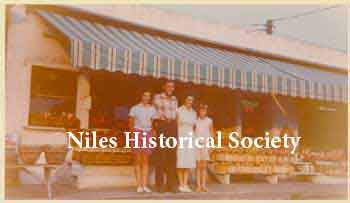
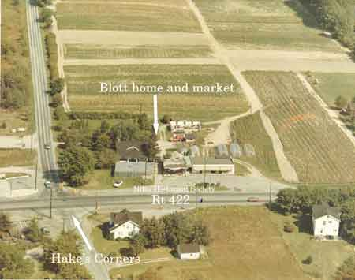

Ward-Thomas Museum


McKinley Heights Memories–Part 3
.
Ward — Thomas
Museum
Home of the Niles Historical Society
503 Brown Street Niles, Ohio 44446
Click here to become a Niles Historical Society Member or to renew your membership
Click on any photograph to view a larger image.
News
Tours
Individual Membership: $20.00
Family Membership: $30.00
Patron Membership: $50.00
Business Membership: $100.00
Lifetime Membership: $500.00
Corporate Membership:
Call 330.544.2143
Do you love the history of Niles, Ohio and want to preserve that history and memories of events for future generations?
As a 501(c)3 non-profit organization, your donation is tax deductible. When you click on the Donate Button, you will be taken to a secure Website where your donation will entered and a receipt generated.
McKinley Heights Memories–Part 1. McKinley Heights Memories–Part 2. |
McKinley
Heights Memories Part 3. Morrow’s Farm Market specializes in fresh fruits and vegetables, with a side line of domestic and imported cheeses. The Fairway is a large and popular discount store owned by Betty Schell and Sidney Jacobe. They have been in business at their location 20 years, celebrating that event this past March. There are four recreational vehicle sales and service businesses grouped on both sides of Route 422. They are Dinard’s, Sirpilla’s, Trailer Enterprises, and Ralph’s. The oldest trailer service was opened in 1955 by Ralph Crawford, when he realized a handyman was needed for the Suburban Trailer Park which had opened. It is now operated by Crawford’s sons, Ron and Rick, and his grandson, Kenny Diernbach. |
|
| |
||
| Dave Birskovich drawing of Crain's barn. |
Still going North on Route 422 to where the Anderson-Morris Road intersects Route 422, stands George’s Restaurant specializing in American and Italian Food. It has been owned and operated by George Aulisio and his son, Bruce, for the past seven years. The Anderson-Morris Road is a road carved out of the original Campbell farm. On this road is the original Campbell home, which is over 100 years old. This property boasts the only original barn left in the Heights. The Crain Brothers, Ralph and Ray, have farmed this land since 1931, having sold lots to redevelop a road bearing the name of their farm – Crain Drive |
|
| |
||
| Photo of Blott's Farm Market on Route 422. |
At the northern boundary of McKinley Heights, which is the Niles-Vienna Road, we have a farm that has been operated as a business for 65 years by the same family. First it was an orchard, then a poultry farm, then a dairy farm. It is presently run as a truck farm with an outlet that sells garden supplies, statuary items, fruits, vegetables, and plants. C. E. Blott has been the owner all these years. His daughter, Phyllis Blott (Bako), is an art teacher in the Niles City Schools.  |
|
| |
||
 |
Aerial view, looking east and south, of the intersection of State Route 422 and Niles-Vienna Road taken in 1973. Blott’s Farm Market, family house and fields are centered in the photograph. The Carlisle Home is on the opposite side of Route 422 across from the Blott home on the west corner of Niles-Vienna Road. Crawford’s Home is the white house farther down 422 on the same side as the Carlisle home. There is a small gas station on the north-east side of the intersect and a restaurant, Hake’s, on the north-west corner. (Pizza Hut now occupies the Blott homesite, 2012.) |
|
|
|
||
{kind=link}
{kind=link}
{kind=link}
{kind=link}